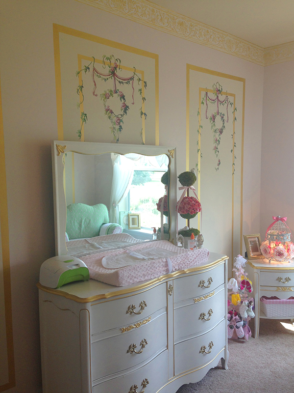
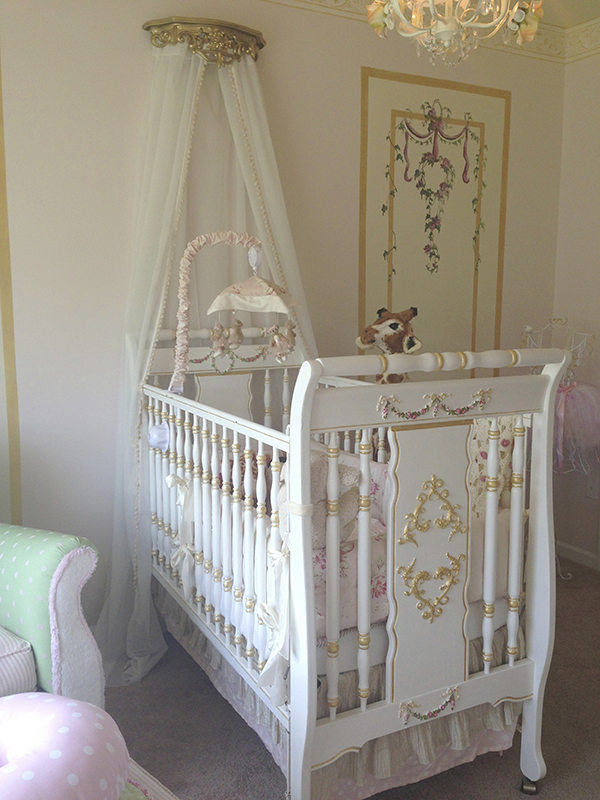
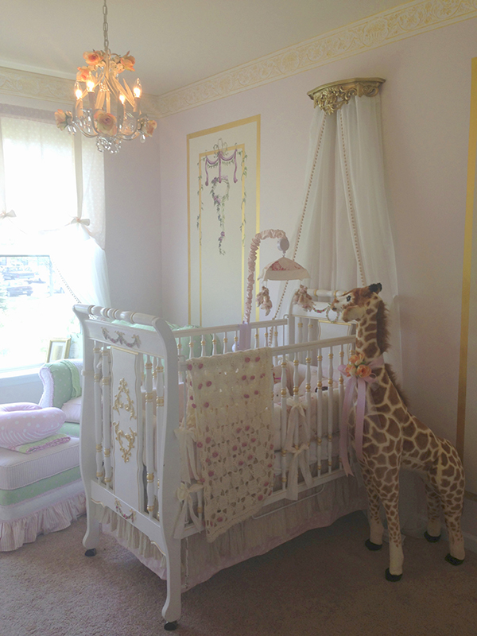
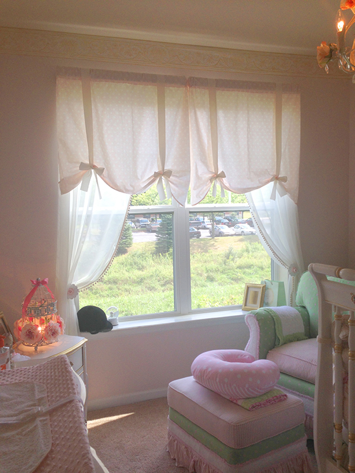
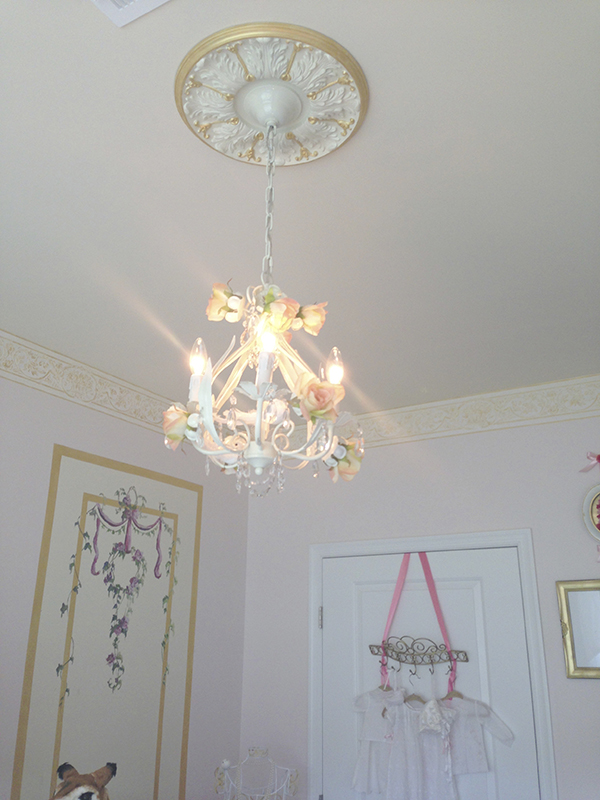
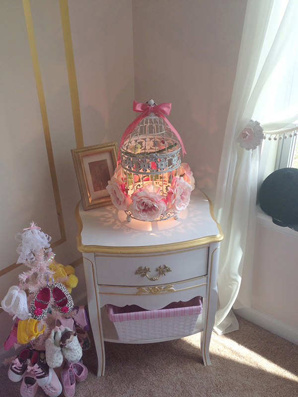
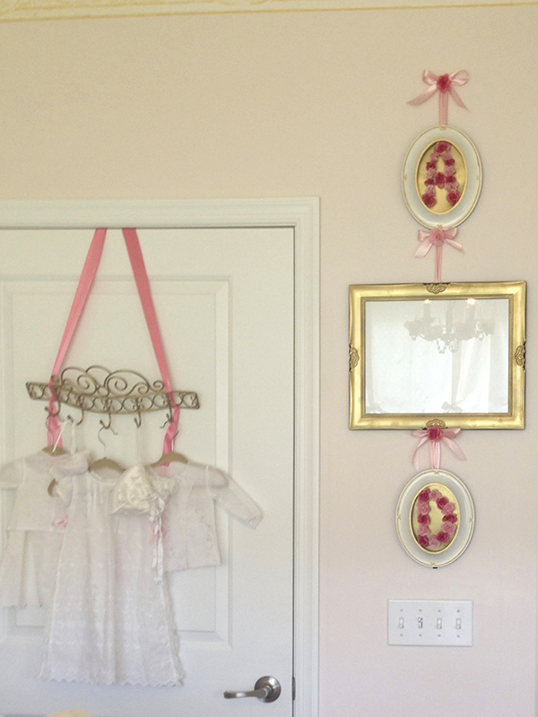
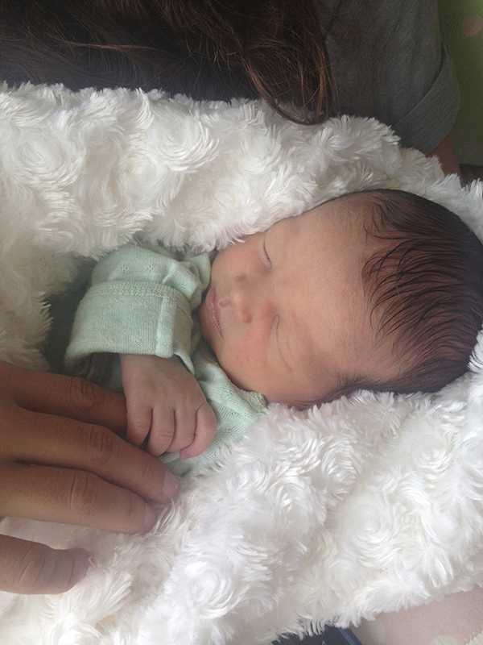
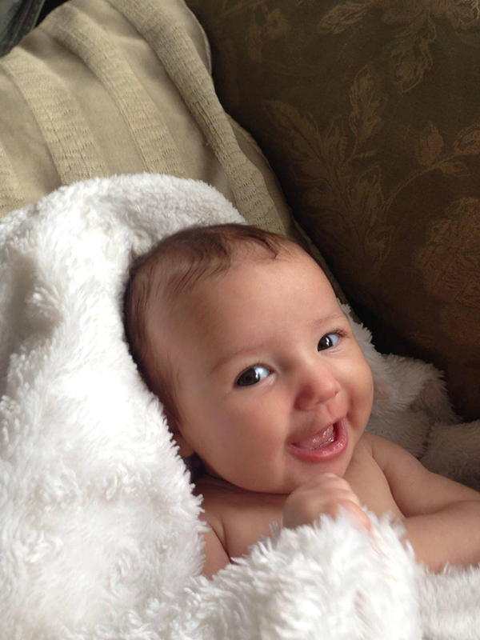

<html>	
<body style="background-color:e5c9c7;">
	</body>
	</html>
	<A HREF="index.html">Home</A>

<head>
		<Title><Sample https://github.com/jessbastidas/jessicabastidas.git</Title>
		<link rel="stylesheet" type="text/css" href="style.css" />

		

	</Head>
	<Body>
		
<div>
	<h1 style="text-align: center;">Making Room for Baby!</h1>
		<p><strong><p><big><center><p style="width:600px;">For my gift giving project, I helped to redesign my older sister Jennie's room into a nursery with the assistance of my younger sister Jillian. This was a two week project completed just in time for Jennie's baby, Aubrielle Dublin, to see it for the first time.</p style></center><p></strong>

			<div style="text-align: center;"></div>
	

			 <p><center><p style="width:600px;">Together, Jillian and I purchased some used furniture off of Craig's list and also salvaged a few pieces from the curb. Then, we proceeded to sand down each piece and repaint them off-white. We sponged the raised edges with faux gold paint.</p style></center></p>

			 <div style="text-align: center;"></div>


			<p><center><p style="width:600px;">The walls were also repainted offwhite and a light pink color. Two of the walls were adorned with faux, hand-painted panels, 3 panels on each wall. I painted the rose wreaths and vines. 

			We sanded and handpainted the crib. I added raised details to create greater dimension and interest to the otherwise plain surface. The canopy was purchased online, but Jillian helped me afix it to the wall. The bedding was also purchased second hand from a family in New Jersey.</p style></center></p>
			<div style="text-align: center;"></div>
	
			<p><center><p style="width:600px;">Jillian helped me cut and tie the bows for the curtains and install the curtain rod. You can also see my older sister Jennie's old riding helmet on the window sill. Maybe the baby will have a knack for riding horses too.

			The wallpaper trim all around the edge of the ceiling has been sponged with gold so the raised parts shimmer slightly. It was very difficult to install since Jillian and I are so short.</p style></center></p>
			<div style="text-align: center;"></div>

				<p><center><p style="width:600px;">The chandelier was a thrift store steal! The chandelier was repainted and Jillian assisted me in adhering faux roses before we hung it from the ceiling.</p style></center></p>
				<div style="text-align: center;"></div>

			<p><center><p style="width:600px;">Similarly, roses and fake birds were attached to the bird cage we painted that doubled as a secondary light fixture. We situated the light fixture next to the baby shoe tree from Jenn's baby shower.</p style></center></p>
			<div style="text-align: center;"></div>

			<p><center><p style="width:600px;">We hung the garments our Abuela had sent from Columbia on a decorative hanger in front of the baby's closet door. The initials A, D, (Aubrielle Dublin) were fashioned out of roses and affixed to picture frames which flanked either side of a larger, golden rectangular frame that we chose to leave empty so that it could be filled with pictures as my niece grew older.</p style></center></p>
			<div style="text-align: center;"></div>

			<p><center><p><strong>Reaction shot:</strong><p style="width:600px;">This was a little anti-climatic, but Jennie liked it a lot.</p style></center></p>
	<div style="text-align: center;"></div>
			<p><center><p><strong><p style="width:600px;">A few months later,</strong> Aubrielle's favorite thing about her room is the stuffed giraffe.</p style></center></p>


				
	</body>
</html>
